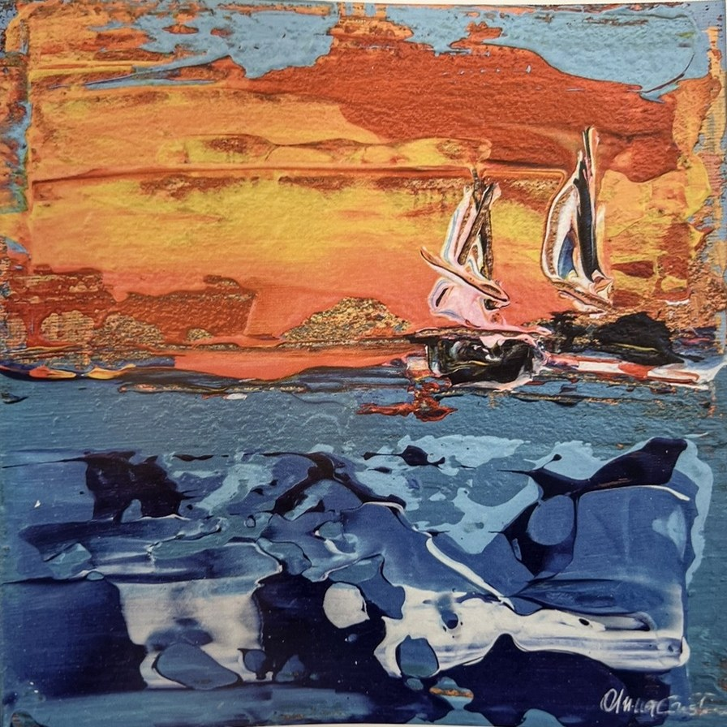
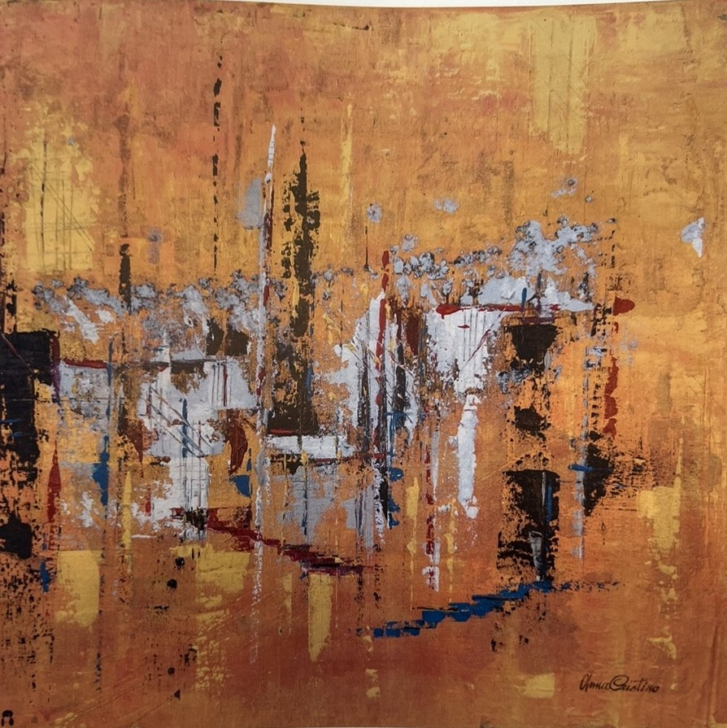

Marine e astratti: scene viste di persona
Accanto alle figure, nel portfolio di Anna Cristino ci sono paesaggi e astratti: scene che l’hanno colpita osservandole di persona, ritratte senza mai celare la propria personalità.
Marine e paesaggi
Barche a vela, tramonti, il mare: nelle marine il tema dell’artista si estende a innamoramenti, distanze e riflessioni. Sono scene paesaggistiche che Anna Cristino ha cercato di ritrarre il più fedelmente possibile, con la spatola e con colori corposi. Tra queste, «The Sea of Love».



Astratti
Negli astratti il colore prende il posto della figura: spatolate, colature, materia stesa a strati. Anche qui, spiega l’artista, resta la sua personalità. Sono lavori che parlano di riflessioni ed esplosioni dell’anima; il titolo «Innamorarsi» richiama uno dei temi che l’artista affida agli astratti e alle marine: gli innamoramenti.



Chiedi di un’opera
Per conoscere prezzi e disponibilità delle opere, o per una commissione, parla direttamente con l’artista.